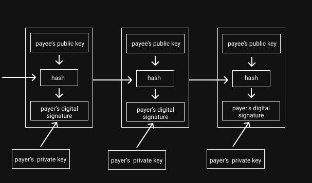

This page can be looked at as a list of ideas that make up the meat of this fascinating concept, filled with my own opinions in between.
If I ask you to do a transaction using cash, you are supposed to take it out from your pocket/wallet. Once you give it to the payee, it belongs to the payee and you cannot reuse that cash, unless you steal it from the payee. If I ask you to do a transaction digitally, where you subtract some money from your bank account and some money gets added to my bank account, that could simply be worked out. But what if the system to perform this transaction has bugs or is compromised, as a result of which, the money gets added to my account but is not subtracted from your account? That just means you get to spend that amount somewhere else. This is the double spending problem. This can lead to inflation in the economy as the payer is creating value out of thin air. In order to prevent this problem, you need a third party that can be trusted to keep a check on all transactions. Bitcoin is an attempt to address this problem using a peer-to-peer network which will eliminate the need of a centralised authority to monitor transactions. This means that two parties within a network can send money to each other without going through a financial institution. The key idea is to build an electronic payment system based on cryptographic proof of work instead of trust. Proof-of-work is supposed to ensure that a transaction is not reversible in nature. It should be computationally impractical to edit or delete transaction records.
A transaction is what you think it is. You have some money. You spend some of it. Somebody gets it. But when you start to define this structure, you have to address these ambiguities. How much money do I have? How do I "spend" it? How does somebody "get" it? And this is where you throw a bunch of cryptography algorithms, an ever-growing merkle tree, and lots of compute power, coupled with an implementation in C++. This is where I lost my mind when I first saw it. There's a lot going on. And I hope to make it simpler for myself.
We have a unit called satoshi. A satoshi is the smallest unit value in bitcoin. 1 satoshi = 0.00000001 bitcoin. Then, we have a transaction. A transaction contains atleast one input and one output.
An input is a reference to an output from a previous transaction. Multiple inputs are often listed in a transaction. All of the new transaction's input values (that is, the total coin value of the previous outputs referenced by the new transaction's inputs) are added up, and the total (less any transaction fee) is completely used by the outputs of the new transaction. An output contains instructions for sending bitcoins. So, in this way, all transactions are actually chained as the output of one transaction later becomes the input of another transaction. An input uses a transaction identifier (txid) and an output index number to identify a particular output to be spent.
The above ideas do not factor in security. Let's get into that. So Bitcoin relies on public-key cryptography and generates public-private key-pairs using ECDSA. Alice wants to send some bitcoin to Bob. Alice and Bob are users of bitcoin and own a key pair each. Alice needs to know the public key of Bob. The public key of Bob and the previous transaction are hashed together. This hash is signed using the private key of Alice. This brings in some level of verification. Bob can now go back and verify the chain of ownership. In actual implementations, the public key of Bob is not used directly. Instead, we use a hash of the public key. This shortens the public key and protects Bob's information in an event where the public key could be used to re-create the corresponding private key. The hash of Bob's public key is now treated as Bob's "bitcoin address".

Cool. This does not ensure that the double spending problem is solved. Whenever a transaction happens, there needs to be some way of ensuring that the money being used here is not already spent. The easy way of doing it is to bring a central authority in between. But that is not what we want. We need a way for the payee to know that the previous owners did not sign any earlier transactions. For our purposes, the earliest transaction is the one that counts, so we don't care about later attempts to double-spend. The only way to confirm the absence of a transaction is to be aware of all transactions. To accomplish this without a trusted party, transactions must be publicly announced, and we need a system for participants to agree on a single history of the order in which they were received. The payee needs proof that at the time of each transaction, the majority of nodes agreed it was the first received.
The proposed solution in the whitepaper is the timestamp server. A timestamp server works by taking a hash of a block of items to be timestamped and widely publishing the hash. The timestamp proves that the data must have existed at the time, obviously, in order to get into the hash. Each timestamp includes the previous timestamp in its hash, forming a chain, with each additional timestamp reinforcing the ones before it. This forms a chain of blocks where editing a block will require you to edit all the blocks that come after it because the blocks are tied together using their hashes. This long running chain is the blockchain. A block could contain a finite amount of transactions. The block size of bitcoin is sort of a debate on the internet. A genesis block is the first block of a block chain. Modern versions of Bitcoin number it as block 0, though very early versions counted it as block 1. The genesis block is almost always hardcoded into the software of the applications that utilize its block chain. It is a special case in that it does not reference a previous block, and for Bitcoin and almost all of its derivatives, it produces an unspendable subsidy. Bitcoin is supposed to be p2p. So every node in bitcoin needs to have the full blockchain. At time of writing, the current size of the blockchain of bitcoin is 340GB!
So when we are operating this blockchain in a p2p system, how do we actually append a block? This brings in the concept of proof-of-work. To implement a distributed timestamp server on a peer-to-peer basis, we will need to use a proof-of-work system. The proof-of-work involves scanning for a value that when hashed, such as with SHA-256, the hash begins with a number of zero bits. The average work required is exponential in the number of zero bits required and can be verified by executing a single hash. For our timestamp network, we implement the proof-of-work by incrementing a nonce in the block until a value is found that gives the block's hash the required zero bits. Once the CPU effort has been expended to make it satisfy the proof-of-work, the block cannot be changed without redoing the work. As later blocks are chained after it, the work to change the block would include redoing all the blocks after it. This act of doing the proof-of-work is called as mining.
After a transaction is broadcast to the Bitcoin network, it may be included in a block that is published to the network. When that happens it is said that the transaction has been mined at a depth of 1 block. With each subsequent block that is found, the number of blocks deep is increased by one. To be secure against double spending, a transaction should not be considered as confirmed until it is a certain number of blocks deep. The classic bitcoin client will show a transaction as "n/unconfirmed" until the transaction is 6 blocks deep.
The steps to run the network are as follows: 1) New transactions are broadcast to all nodes. 2) Each node collects new transactions into a block. 3) Each node works on finding a difficult proof-of-work for its block. 4) When a node finds a proof-of-work, it broadcasts the block to all nodes. 5) Nodes accept the block only if all transactions in it are valid and not already spent. 6) Nodes express their acceptance of the block by working on creating the next block in the chain, using the hash of the accepted block as the previous hash. Nodes always consider the longest chain to be the correct one and will keep working on extending it. If two nodes broadcast different versions of the next block simultaneously, some nodes may receive one or the other first. In that case, they work on the first one they received, but save the other branch in case it becomes longer. The tie will be broken when the next proof-of-work is found and one branch becomes longer; the nodes that were working on the other branch will then switch to the longer one
New transaction broadcasts do not necessarily need to reach all nodes. As long as they reach many nodes, they will get into a block before long. Block broadcasts are also tolerant of dropped messages. If a node does not receive a block, it will request it when it receives the next block and realizes it missed one.
By convention, the first transaction in a block is a special transaction that starts a new coin owned by the creator of the block. This adds an incentive for nodes to support the network, and provides a way to initially distribute coins into circulation, since there is no central authority to issue them. The steady addition of a constant of amount of new coins is analogous to gold miners expending resources to add gold to circulation. In our case, it is CPU time and electricity that is expended.
Once the latest transaction in a coin is buried under enough blocks, the spent transactions before it can be discarded to save disk space. To facilitate this without breaking the block's hash, transactions are hashed in a Merkle Tree with only the root included in the block's hash. Old blocks can then be compacted by stubbing off branches of the tree. The interior hashes do not need to be stored.
Over time, development of Bitcoin has led to conflict of interests amongst developers which have led to forks of bitcoin coming into existence and to some degree, this has become political. You have three different cryptocurrencies: BTC, BCH, BSV. Each one of them seems to have a community on sites like Reddit. They all have their code open sourced on GitHub. To make a decision about what is good for you, it comes down to what technological and philosophical changes you understand and support.